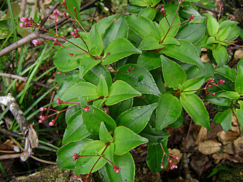

旅游日记--记祖国的大好河山--三清山
若想此生不枉此行，请先清楚该往哪儿走，怎么走，那种完整，怎样完整？
若想清楚了，那还等什么等？前途风光正好，追风赶月莫停留


三清山的杜鹃林，主要分布在女神峰至玉台和风门至玉京峰，以及流霞台至西海岸一带。江西杜鹃、云锦杜鹃、鹿角杜鹃、猴头杜鹃、红毛杜鹃，还有叫不上名字的，成百上千，数不胜数。奇峰林立，壁立千仞，上千年的乔木杜鹃，树干黝黑而透红，与铁杉、黄杨、木莲、香果掺杂在一起，感觉特别虬曲苍劲。每一片杜鹃的树叶，都仿佛被雨水雾气洗亮了。据说，三清山杜鹃年龄最大的有1500多岁。每一个到三清山观赏杜鹃的人，都会不由得对一棵棵上了年纪的杜鹃树肃然起敬。在三清山，早于杜鹃绽放的花序，应是梅花、樱桃花、山茶花、玉兰花。而后才是杜鹃花骨朵开始绽放，白的洁净晶莹，红的灿烂明艳。尤为神奇的还是“百变杜鹃”，色彩由深及浅，红、粉、紫、白依次呈现。奇异的是，三清山的杜鹃“十月怀胎”，七八月花谢了就长出了新的花蕾，待到来年的五六月才绽放。而这个周期，似是杜鹃跨年度的一种睡眠，一旦醒来，就绽放得热烈奔涌，让漫山遍野姹紫嫣红。
三清山不仅有奇峰怪石，它的松树也更有特色。由于高山风、霜、雨、雪、雾等自然气候的影响，造型千姿百态。有的破岩而出，有的盘石而生，有的挺立于峰顶，有的垂挂于陡壁。松的桠枝飘曳交叉，树冠平展如伞，主干苍劲坚挺。。。尤其是那些长在风口的松树朝着一个方向伸张，如同松扇，甚为壮观。

秀丽野海棠
【异名】高脚山茄、活血丹
【植物形态】
常绿小灌木，高约65厘米，小枝、花序、叶柄及叶片两面叶脉上均密生棕色皮屑状毛。叶对生，卵形至卵状长椭圆形，长3.5～10厘米，先端渐尖，基部圆形至浅心形，边缘稍有细锯齿，有主脉3条；具叶柄。顶生圆锥花序，花序上有具柄的腺毛；花淡红色；萼管陀螺形或到卵形，裂片4，短，有齿；花瓣4，倒卵形；雄蕊4，不等长，长者下倾；子房有隔膜8，花柱丝状。蒴果近球形。花期7～9月。果期9～10月。 生于山坡路边、林下或灌木丛中与山坡、 沟边草丛中。分布浙江、广西等地。
【功用主治】祛风利湿，活血调经。